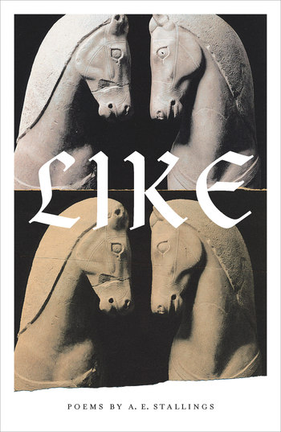

试译A.E.Stallings
小猫头鹰
（纵纹腹小鸮*）
使我们成为我们的，不是我们看见的那些
而是那些看见我们的。
你还记得多年以前的斯佩特塞斯**吗？
在昏星***下，
海浪在它的玻璃暗榫上来回翻滚，
我们沿着海岸散步，
突然目击一只小猫头鹰，
这只小小的鸟
比陶罐还小，
它难以置信地在橄榄枝条上保持平衡，
静止的单调容器与任何扰动的事物相协调，
近还是远：
刺猬在无花果的飘落中蹒跚，
壁虎，老鼠。
而她旋转着凝视我们的轨道，
像一座灯塔投来库克罗普斯****般的目光。
————————————————————
*小猫头鹰的学名，有“夜晚中明眸的雅典娜”之意。
**希腊的一个富裕的岛屿。
***昏星在西方水平线上、于日落后的短暂时间内所见的内行星。
****古希腊神话中的独眼巨人。
最后的旋转木马
木马们已经目睹过
更美好的时日，它用一只眼睛
端详过轨道外的世界。而另一只
总是向内探视，在那里运动的机件
躲藏在黯淡的柱形金边镜子里边。
为什么我们被他们的抛光桐杖
刺穿自己的心脏？
错配的孤儿们，古董们，
实木雕塑，工业玻璃纤维们，
它们逆时针旋转，一圈又一圈，
而时间与他们保持着一臂之遥。
它们蹄上钉铁却从不落地。
它们知道缰绳的摇晃在为他们投标，
脚跟敲击着它们的腹部
催促他们在原地越来越快，
那些笑声，那些外面的喊声，
那些在车辙上结结巴巴的罐装音乐，
最后一次晕船的涨潮和退潮。
它们的奔驰是一次抢夺的浪潮。
在节奏分明的进步中，它们是马的远房亲戚
套着被盗的，大理石雕饰的辔绳，
在浮雕里，在那些久远的博物馆中，
它们曾被颜料梳妆。
但现在我看到了它们
在艳俗灯光的蜂箱下耐心等待，
当一代人昏眩地攀爬上去，
另一些人闷闷不乐地回归夜晚——
最后一次，这不公平！——
我因他们静止的轴心而感动，
因他们真诚的，马鬃的褴褛彗尾。